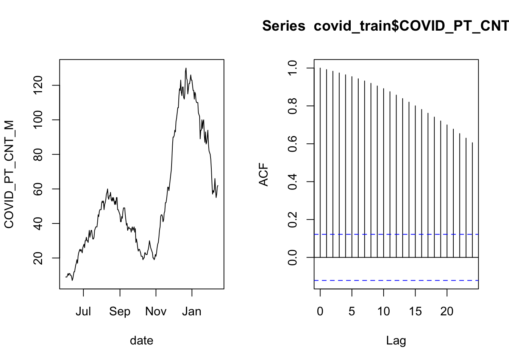
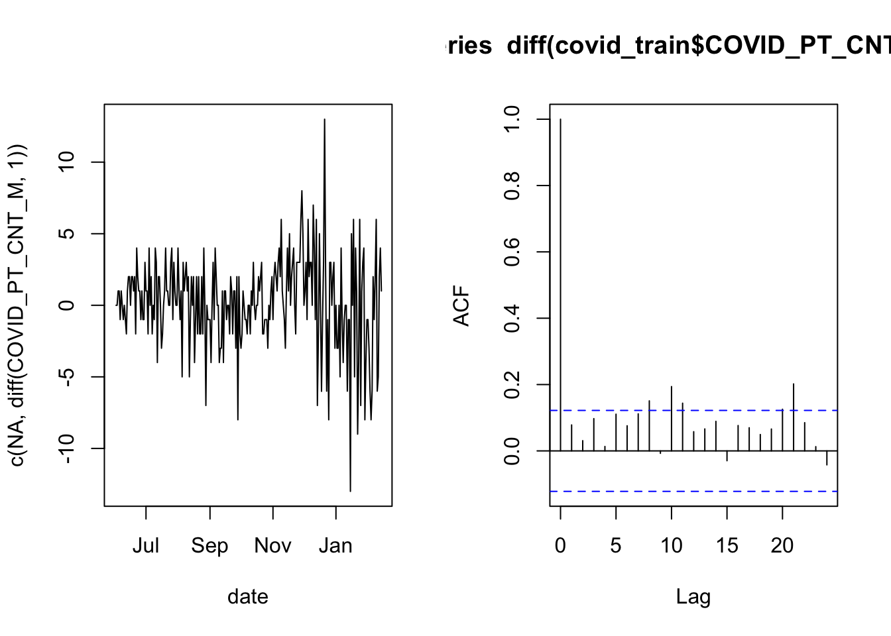
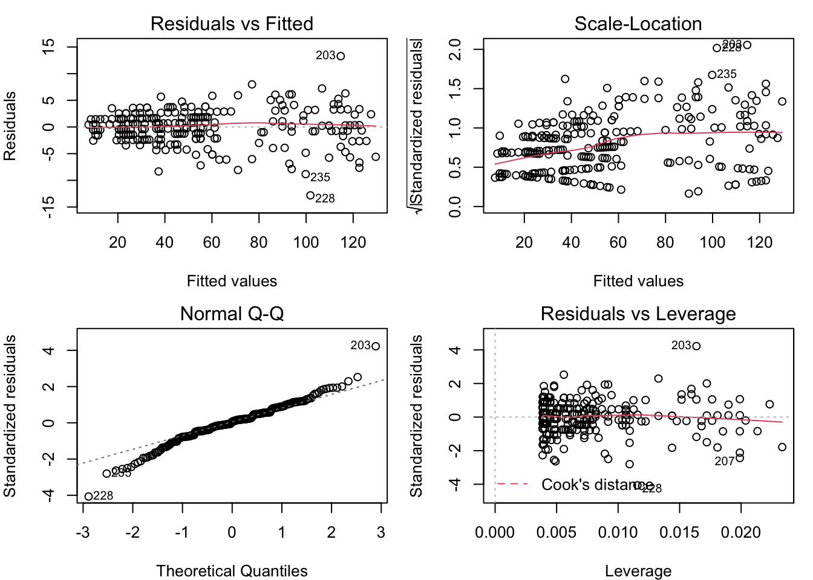
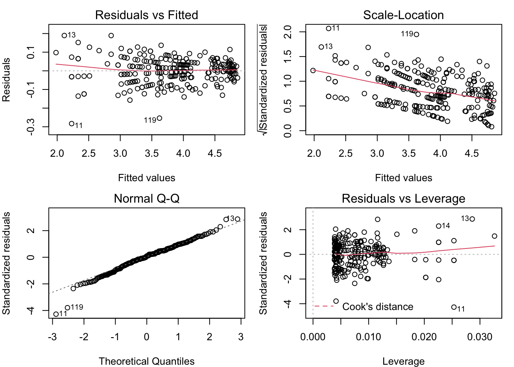
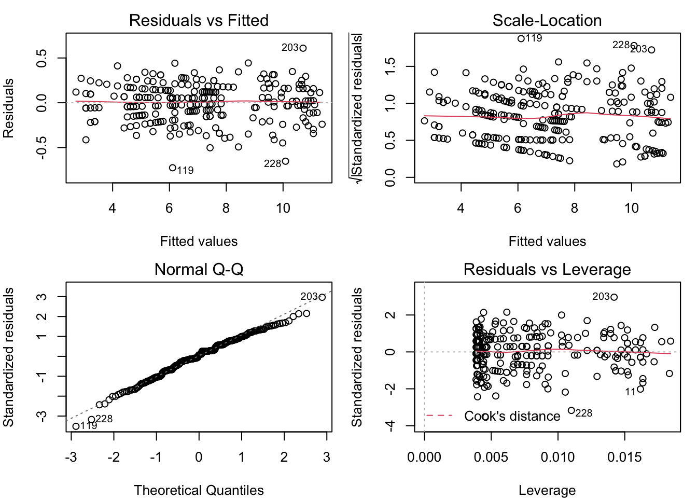
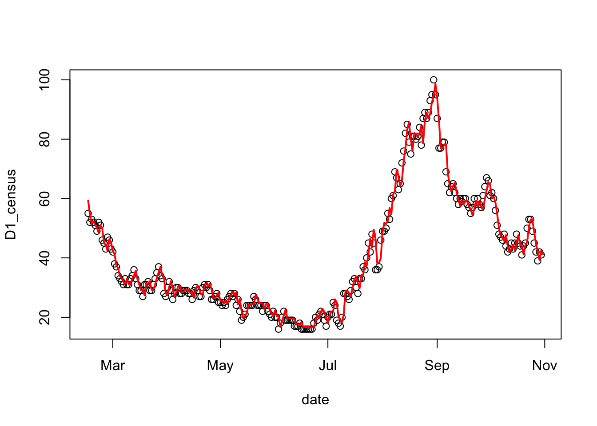

5 Example: Overnight bed occupancy
Recall that one of our goals is to predict the number of hospital beds that will be occupied tonight by COVID-19 patients. Before beginning, let’s split the data in half - we’ll use the first half for model building and intermediate validation, and reserve the second half for final validation.
# add a variable to covid for the one-day-ahead census (the prediction target)
covid$D1_census = lead( covid$COVID_PT_CNT_M, 1 )
# create a 50/50 train/validation split of the covid data
covid_split = validation_time_split( covid, prop=0.5 )
# extract the covid_train data set
covid_train = training( covid_split$splits[[1]] )5.1 Checking whether observations are independent
That’s count data, but we may suspect that the nightly counts are not independent, because it is common for a person to spend consecutive nights in the hospital. Let’s check the autocorrelation of the counts to see if our hunch is correct.
layout( matrix(1:2, 1, 2) )
with( covid_train, plot( date, COVID_PT_CNT_M, type='l') )
acf( covid_train$COVID_PT_CNT_M )
The plot on the left is the time series of overnight census counts, and the plot on the right is the autocorrelation function. The gist of the autocorrelation function is that the “Lag” indicates a number of days separating data points, and when the lines are far above or below zero then there is correlation between points that are separated by that many days. The correlation at lag zero is always one because that is comparing a day’s data to itself (separated by zero days).
There is a lot of autocorrelation in this time series. This may be ok if we can “control for” the correlation. It is possible to control for autocorrelation if the long-term correlation between distant observations is the same as the relationship between neighboring observations, iterated for every data point that separates the two distant observations. In that case, the data are independent, conditional on the previous day’s count. In practice that means including the previous day’s count as a predictor in the model.
The way to think about The smoothly decaying autocorrelation as the lag time increases tells us that the nightly counts are correlated with the previous count in a consistent pattern. In that case, the increments may be independent, even though the individual observations are not.
layout( matrix(1:2, 1, 2) )
with( covid_train, plot( date, c(NA, diff(COVID_PT_CNT_M, 1 )), type='l'))
acf( diff(covid_train$COVID_PT_CNT_M, 1) )
Now the autocorrelation looks much better because most of the vertical lines are very small (the first line will always touch a maximum value of 1 by definition). This is an indication that a linear model for the nightly bed occupancy should use the previous night’s occupancy as a predictor.
5.2 Validating the distribution for a linear model
A linear model (like what you get from R’s lm() function) comes with some assumptions, and helpfully provides simple tools to help you validate them. Among these are assumptions that the errors have a normal distribution with constant variance. Let’s look at how to test that.
5.2.1 Examiune diagnostic plots
Validating the assumptions about the distribution of errors in a linear model is usually done through the diagnostic plots. These are four plots you get when you plot() a fitted lm() model. We already know that our example will use the previous night’s occupancy as a predictor, so let’s start with the simplest model of that kind.
# estimate the AR1 model
census_model = lm( D1_census ~ COVID_PT_CNT_M, data=covid_train )
# show the diagnostic plots in a 2x2 layout
layout( matrix( 1:4, 2, 2 ) )
par(mar=c(4,4,2,1))
plot( census_model )
These plots reveal some classic problems with the linear model census_model. Learn to recognize these, and you’re well on your way to doing good data analysis. We will look at the first three, since the fourth plot is less often relevant, and requires a deeper understanding of the model’s structure.
5.2.1.1 Residual vs. fitted
The ideal is for the points in this plot to exhibit no pattern. But the points in this plot are arrayed in a fan shape that widens to the right. This suggests that the residuals get more variable as the fitted value increases. The other common problem that could be seen in the residual vs. fitted plot is a “U” shape (or upside-down “U”), which would suggest that the relationship between the predictors and the response is not linear. We don’t have any kind of “U” shape here, though.
5.2.1.2 Scale-location
The ideal for this plot is also to have no apparent pattern. But in this example, we can see that the points are more tightly clustered on the left, and more spread out on the right. As in the Residual vs. Fitted plot, this is an indication that the residuals are not constant for different fitted values. The red line is a smoothing line that helps clarify the pattern in the dots.
5.2.1.3 Normal Q-Q
This plot helps you to validate the assumption that the residuals are from a normal distribution with constant variance. The ideal for this plot is to have all of the dots lie on the dotted line. That’s not the case here, as the dots at both ends bend away from the dotted line. This is an indication of “heavy tails”, which may be because the residuals are more variable as the fitted values increase.
5.2.2 What to do about the diagnostic plots
The patterns seen here suggest that it may be appropriate to transform the response variable in a way that compresses the larger values, relative to the smaller values. The most commonly used transformations of this kind are a logarithm or a square root transformation. There is no “U” shape in the residual vs. fitted plot, so we see no problem with the assumption that the response is a linear function of the predictors. Therefore, in order to not spoil the linear relationship, we should apply the same transformation to the predictor as to the response.
5.2.3 Try a log transform
Here’s the code to fit a model with the log transform and generate the diagnostic plots.
# estimate the log model
census_model_log = lm( log(D1_census) ~ log(COVID_PT_CNT_M), data=covid_train )
# show the diagnostic plots in a 2x2 layout
layout( matrix( 1:4, 2, 2 ) )
par(mar=c(4,4,2,1))
plot( census_model_log )
The patterns in the Residual vs. Fitted and Scale-Location plots are the opposite of what they were for the untransformed model (the fan opens to the left, and the scale gets smaller for greater fitted values). Once again, it looks like the assumption of normal residuals with constant variance isn’t supported.
5.2.4 Try square root transform
The log transform went too far in compressing the greater counts relative to the smaller counts. The square root transforms data in a similar way, qualitatively, but is less extreme. Let’s see what happens when we use that transform instead.
# estimate the square-root model
census_model_sqrt = lm( sqrt(D1_census) ~ sqrt(COVID_PT_CNT_M), data=covid_train )
# show the diagnostic plots in a 2x2 layout
layout( matrix( 1:4, 2, 2 ) )
par(mar=c(4,4,2,1))
plot( census_model_sqrt )
Now, these diagnostic plots are not exactly perfect, but they are about as close as you can get with real-world data. Under the square root transformation, we have validated the assumption that the model residuals are normally distributed with constant variance.
5.3 Filter candidates by cross-validation
The final step in this example is to demonstrate selecting the variables for the linear regression model. Since the model will be used in prediction, we want to pick the set of predictors that generate the best performance on out-of-sample data. To do so, we need to test the candidates on out-of-sample data, and pick the one that performs best. We have reserved some out-of sample data, but that is for final validation. While we sort through candidate models, let us continue to use the training data. We will use cross-validation to simulate how it does over new data. Once we have a few candidate models in mind, we will use the validation data to pick one of them.
# set a random seed for the sake of reproducibility
set.seed(20211119)
# Create a list of five candidate models
formulas = list(
m1 = sqrt(D1_census) ~ sqrt(COVID_PT_CNT_M),
m2 = sqrt(D1_census) ~ sqrt(COVID_PT_CNT_M) + COVID_NEW_ADM_MEAN,
m3 = sqrt(D1_census) ~ sqrt(COVID_PT_CNT_M) + COVID_NEW_ADM_MEAN + POSITIVITY_RATE_MEAN,
m4 = sqrt(D1_census) ~ sqrt(COVID_PT_CNT_M) + COVID_NEW_ADM_MEAN + POSITIVITY_RATE_MEAN + COVID_DISCHARGE_MEAN,
m5 = sqrt(D1_census) ~ sqrt(COVID_PT_CNT_M) + COVID_NEW_ADM_MEAN + POSITIVITY_RATE_MEAN + COVID_DISCHARGE_MEAN + COVID_PT_CNT_MIDNIGHT_MEAN
)
# create ten cross-validation folds
covid_cv = vfold_cv( covid_train, v=10 )
# create a workflow set of candidate models
candidates = workflow_set(preproc = formulas, models = list(lm = linear_reg()))
# run the candidates on the CV folds
cv_result = workflow_map( candidates, "fit_resamples", resamples = covid_cv)
# view the ranked results
rank_results( cv_result, rank_metric="rmse" ) %>% filter(.metric == 'rmse')## # A tibble: 5 × 9
## wflow_id .config .metric mean std_err n preprocessor model rank
## <chr> <chr> <chr> <dbl> <dbl> <int> <chr> <chr> <int>
## 1 m5_lm Preprocessor1… rmse 0.197 0.00919 10 formula linear… 1
## 2 m3_lm Preprocessor1… rmse 0.197 0.00963 10 formula linear… 2
## 3 m4_lm Preprocessor1… rmse 0.198 0.00995 10 formula linear… 3
## 4 m2_lm Preprocessor1… rmse 0.203 0.0103 10 formula linear… 4
## 5 m1_lm Preprocessor1… rmse 0.206 0.00971 10 formula linear… 55.4 Final validation / selection
Based on the exploratory modeling work, we conclude that models 5, 3, and 4 are the best candidates. Then we’ll send these three to the final validation stage, where we select the one that has the best accuracy over the validation data that was held out from the exploratory and modeling work.
# validation candidates are models 5, 4, and 3
valcan = candidates[c(5,3,4), ]
# run the validation candidates models on the validation data
val_result = workflow_map( valcan, "fit_resamples", resamples = covid_split)
# view the ranked results
rank_results( val_result, rank_metric="rmse" ) %>% filter(.metric == 'rmse')## # A tibble: 3 × 9
## wflow_id .config .metric mean std_err n preprocessor model rank
## <chr> <chr> <chr> <dbl> <dbl> <int> <chr> <chr> <int>
## 1 m3_lm Preprocessor1… rmse 0.215 NA 1 formula linear… 1
## 2 m4_lm Preprocessor1… rmse 0.216 NA 1 formula linear… 2
## 3 m5_lm Preprocessor1… rmse 0.217 NA 1 formula linear… 3So we would select model three as the one that performs best in prediction. Here’s how it looks in prediction:
# extract the test data
covid_test = testing( covid_split$splits[[1]] )
# create the final model
census_model = lm( sqrt(D1_census) ~ sqrt(COVID_PT_CNT_M) +
COVID_NEW_ADM_MEAN +
POSITIVITY_RATE_MEAN,
data=covid_train )
# plot the census test output
with( covid_test, plot(date, D1_census) )
# add the lines of the predicted census count
lines( covid_test$date, predict( census_model, covid_test )^2, col='red', lwd=2)